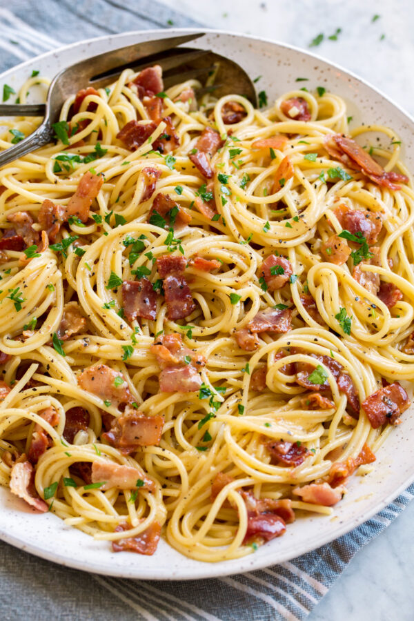

Pasta Carbonara

Description
If you’ve never had homemade pasta carbonara before, you’re in for a real treat!
Pasta carbonara typically features a creamy sauce that’s made with pancetta, garlic, pasta water, cheese and eggs.
The egg-based sauce is cooked by combining it with the piping hot spaghetti pasta and a little of the cooking water.
Ingredients
- 10 slices bacon, cut into 1/2-inch pieces
- 8 1/2 cups water, divides
- 4 cloves garlic, minces
- 1 lb spaghetti or linguine
- 1 1/4 cups finely grated parmesan cheese, plus more for serving (2 oz)
- 3 large eggs
- 1 large egg yolk
- 1 tsp each salt and pepper, or to taste
- Chopped fresh parsley, for garnish
- Add bacon and 1/2 cup of the water to a large non-stick skillet and bring to a
simmer over medium-high heat.
- Allow to simmer until water evaporates about 6-7 minutes, then reduce heat to a
medium-low and continue to cook until bacon is brown and crisp, about 6-8 minutes longer.
- Place a fine mesh strainer over a bowl then pour bacon into a strainer while reserving
about 1 tsp of the rendered fat in pan. Return pan to heat and saute garlic about 30 seconds,
until fragant and lightly golden.
- Pour into a medium mixing bowl then add 1 Tbsp rendered bacon fat to mixing bowl with garlic.
Add eggs, egg yolk, parmesan and pepper to garlic mixture and whisk until well combined.
- Meanwhile, bring 8 cups of water to a boil in a large dutch oven. Add spaghetti and salt to boiling
water and cook until al dente. While pasta is boiling, set a colander in a large bowl.
- Carefully drain al dente pasta into colander in bowl, while reserving pasta water in bowl.
Measure out 1 cup hot pasta water and discard remaining water. Immediately place pasta in
now empty large bowl.
- Slowly pour and whisk 1/2 cup pasta water into egg mixture, then slowly pour mixture over pasta
while tossing to coat. Add bacon and toss to combine. Season with salt if desired.
- Let pasta rest, tossing frequently, 2-4 minutes until sauce has thickened slightly and coats pasta.
Thin with remaining 1/2 cup hot pasta water as needed. Serve immediately topped with additional parmesan and parsley.
Source